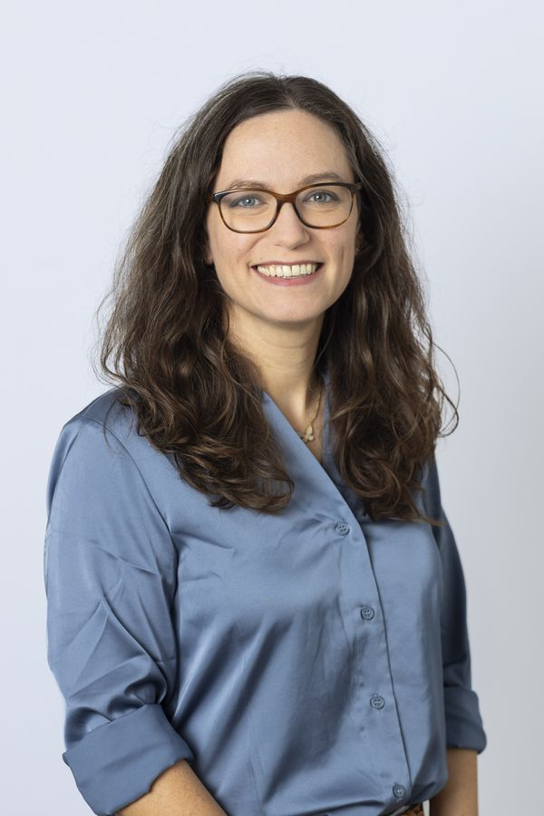
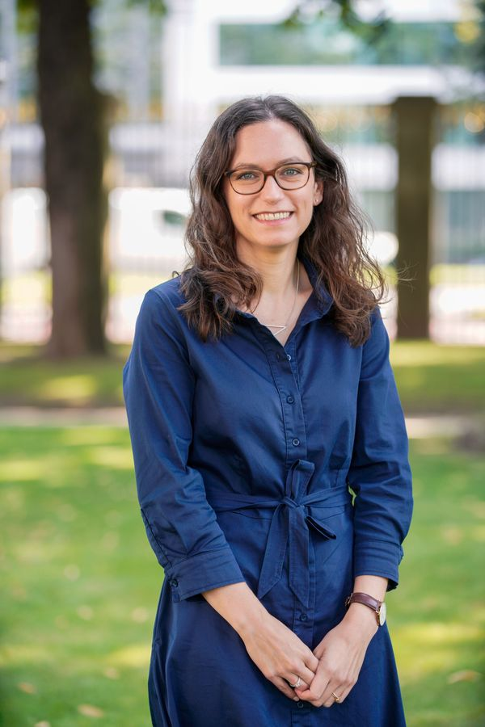
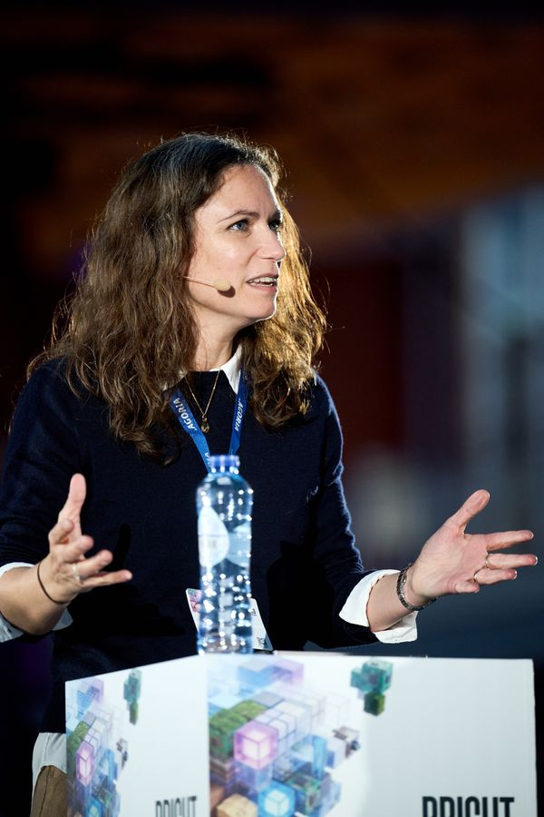
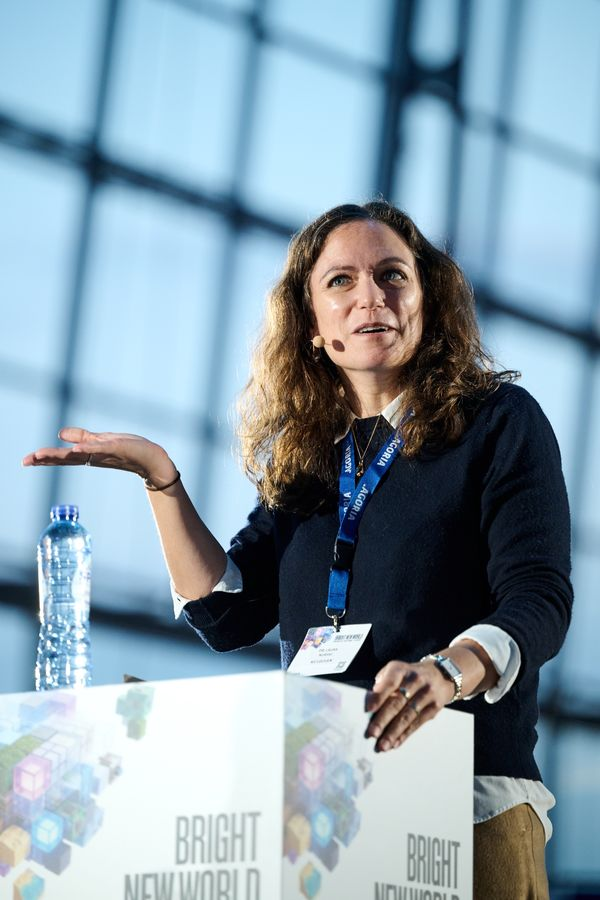
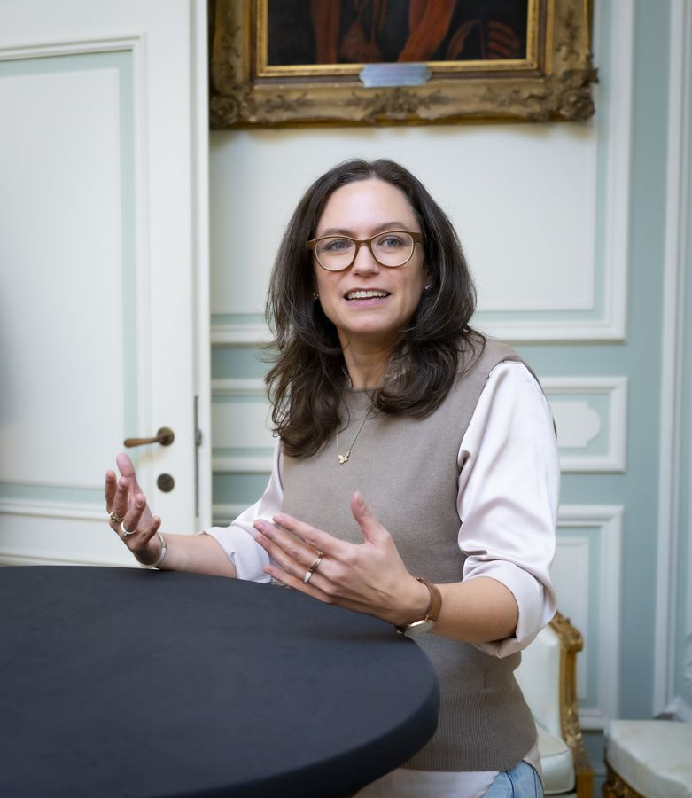
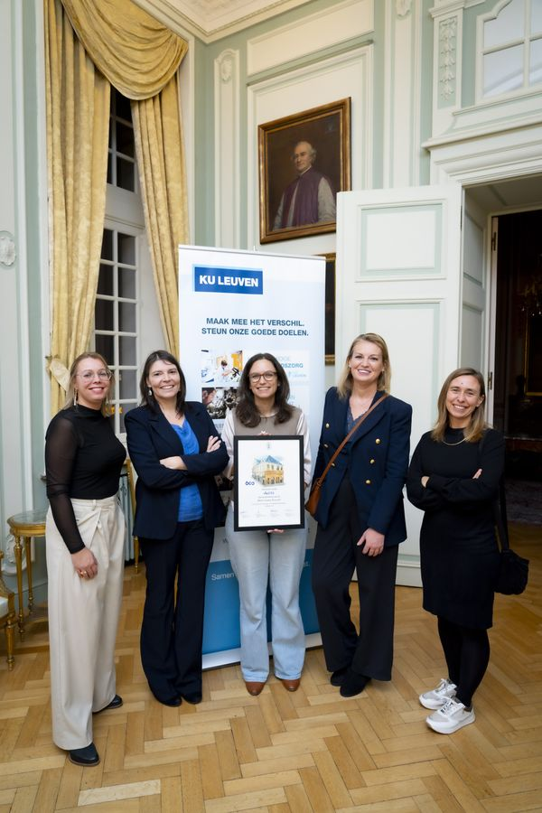
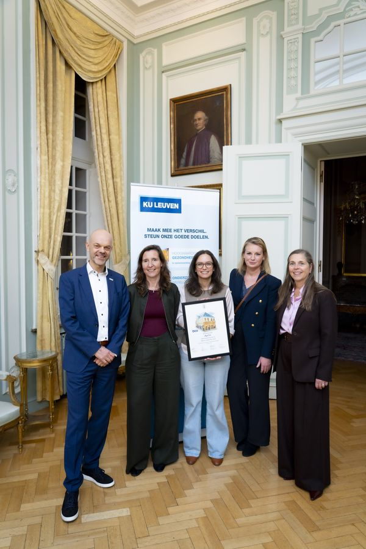
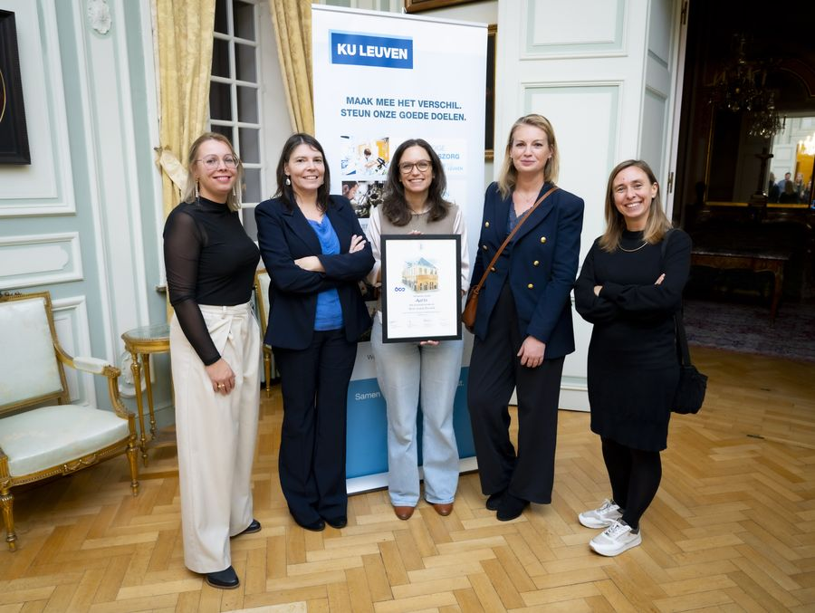
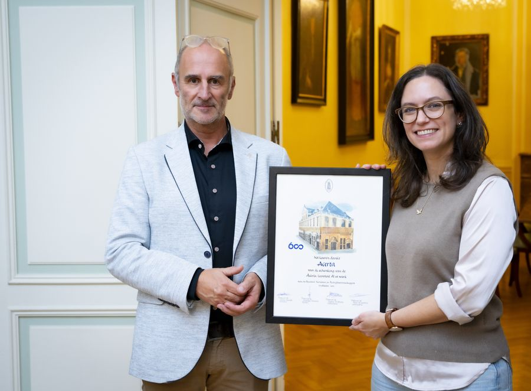

Press kit
Dr Laura Nurski
Bios, photos, video and contact details for journalists and communication partners. All texts and photos on this page may be used for articles, event programmes and announcements.
Title and bios
Dr Laura Nurski, Head of the Future of Work Programme (CEPS) and Assistant Professor (KU Leuven)
Dr Laura Nurski is Head of the Future of Work programme at the Centre for European Policy Studies, leading policy research on the labour market impact of AI. She is also Assistant Professor of the Acerta Chair “AI at Work” at KU Leuven, conducting experimental research on AI and job design. Laura holds a PhD in Economics and three Master’s degrees (in Economics, Sociology and Business Engineering), all from KU Leuven.
Dr Laura Nurski is Head of Programme on Future of Work at the Centre for European Policy Studies (CEPS), where she leads policy research on the impact of artificial intelligence on labour markets, work organisation and job quality. She is also Assistant Professor at the Faculty of Economics and Business at KU Leuven where she holds the Acerta Chair AI at Work, conducting experimental (workplace) research on AI and job design. Laura holds a PhD in Economics, a Master of Advanced Studies in Economics, a Master in Business Engineering, and a Master in Sociology, all from KU Leuven.
Dr Laura Nurski is Head of Programme on the Future of Work at the Centre for European Policy Studies (CEPS) in Brussels, where she leads policy research on the impact of artificial intelligence on labour markets, work organisation and job quality. She is also Assistant Professor in the Work and Organisations Studies department of the Faculty of Economics and Business at KU Leuven where she holds the Acerta Chair AI at Work, conducting experimental (workplace) research on AI and job design.
Previously, she worked as a data scientist and researcher in both the private sector and academia, applying quantitative methods to labour market and work organisation research. Her expertise includes job and organisational design, labour market projections and AI exposure measurements. Laura holds a PhD in Economics, a Master of Advanced Studies in Economics, a Master in Business Engineering, and a Master in Sociology, all from KU Leuven.
Photos
Click “Download high resolution” to save a print-quality version. Please include the photo credit where one is given.
Portraits




Speaking






Launch of the Acerta Chair “AI at Work”, KU Leuven








Video: Acerta Chair AI at Work
An introduction to the Acerta Chair AI at Work at KU Leuven, where we do experimental workplace research on AI and job design.
Topics I comment on
- AI and the labour market
- Job quality and job design
- Organisation design and algorithmic management
- Skills and EU labour policy
Interviews in English and Dutch.